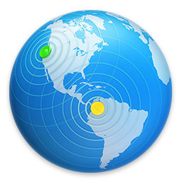
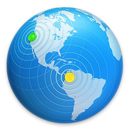

歡迎光臨 iisuStudio
這是一個私人的工作網頁。主要用於研究直覺式的交互網頁平台，和提供詳細記錄的工作成果及心情發想。歡迎隨意瀏覽觀看。
若要使用您自定的網頁內容，您也可以在此自定網站的「Store Site Files In」檔案夾（DocumentRoot）中加入您自己的索引檔案，來取代此暫存網頁。
這是一個私人的工作網頁。主要用於研究直覺式的交互網頁平台，和提供詳細記錄的工作成果及心情發想。歡迎隨意瀏覽觀看。
若要使用您自定的網頁內容，您也可以在此自定網站的「Store Site Files In」檔案夾（DocumentRoot）中加入您自己的索引檔案，來取代此暫存網頁。